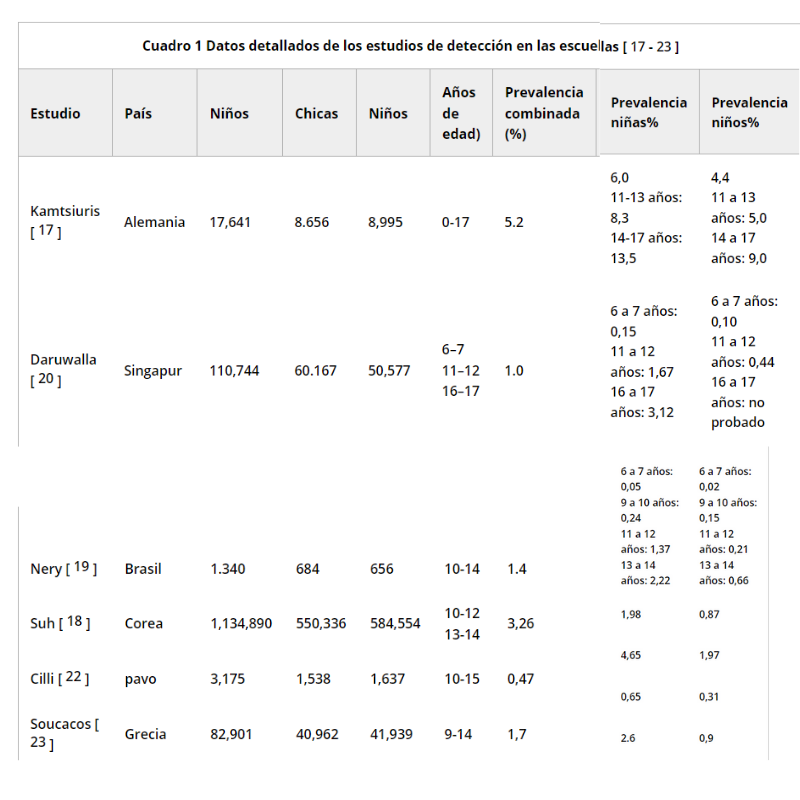
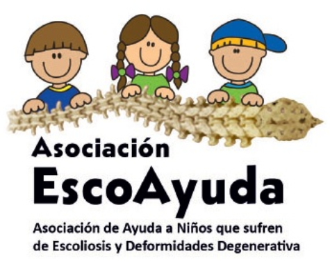
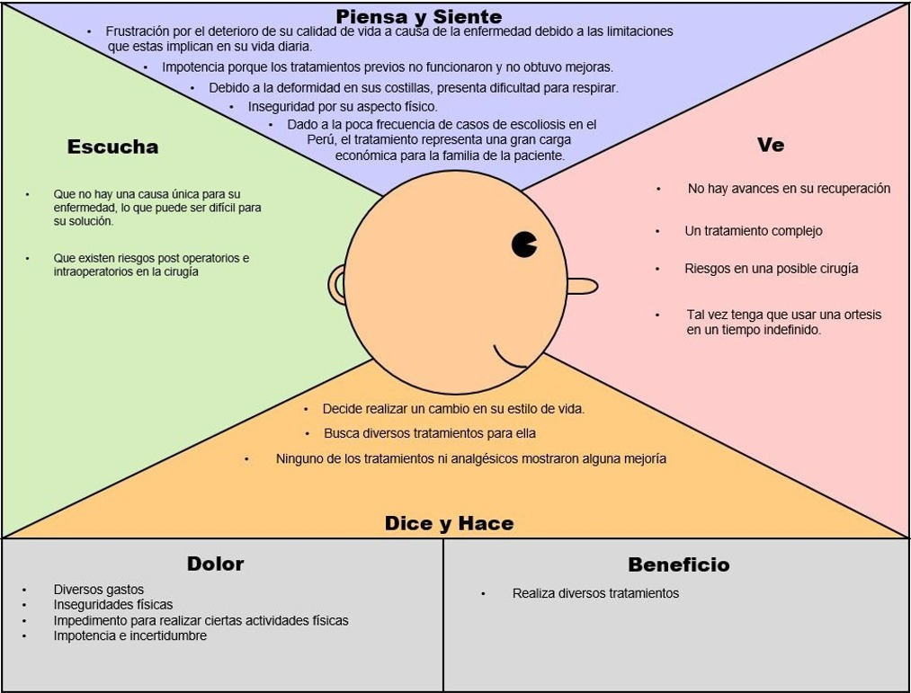
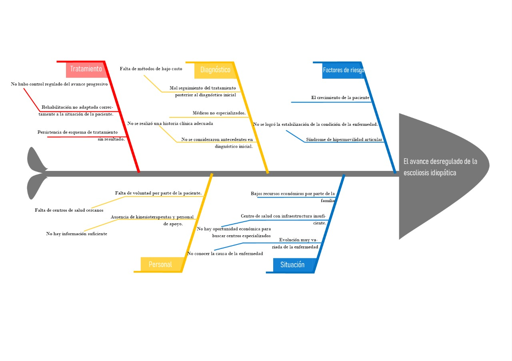
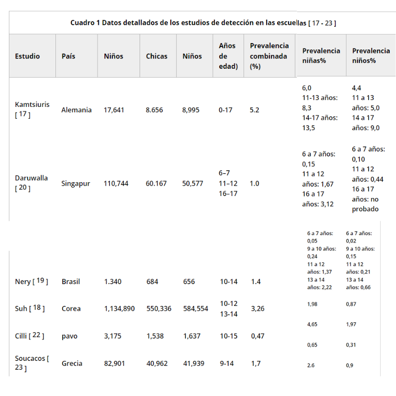
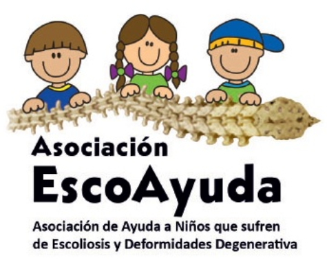
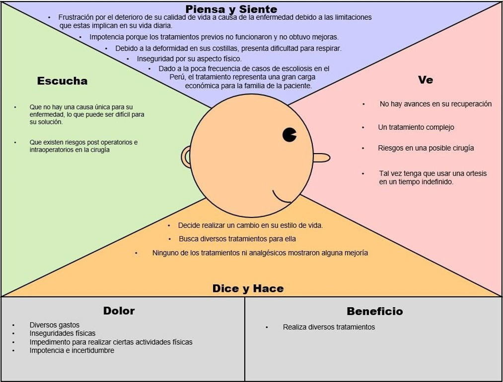
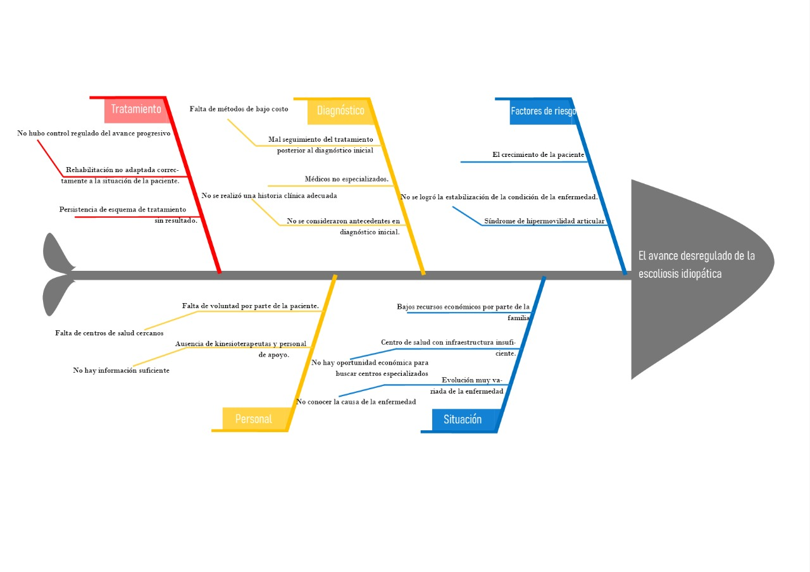

2. Congénita, como resultado de asimetría en el desarrollo de las vértebras.
3. Idiopática, cuando no encontramos una causa específica.
La prevalencia AIS en todo el mundo varia del 0,93% al 12% [2]. Varios estudios que proporcionan tales datos tienen debilidades sustanciales como definiciones variables de escoliosis, protocolos de estudio y grupos de edad, estándares faltantes para la comparación e inclusión de curvas <10 °, aunque existe un consenso internacional de que, por definición, la escoliosis es una deformidad ≥10 °

En los diferentes estudios los datos indican una mayor prevalencia de escoliosis en pacientes mayores de 15 años (después de la pubertad) y en el género se observó que los datos indican una proporción de prevalencia general de 2: 1 entre mujeres y hombres, con un aumento con la edad.[3]

Con todos estos datos podemos decir que la escoliosis idiopática es una enfermedad frecuente en adolescente por los diversos estudios que se han desarrollado referidos a esa etapa. La prevalencia y su gravedad son más altas en las niñas.
Contexto Económico
El tratamiento de la escoliosis juvenil dependiendo de la gravedad de la deformidad puede realizarse de forma no quirúrgica, mediante el uso de ortesis. Los corsés utilizados para este fin varían en precio dependiendo del material y del sector socioeconómico de la población objetivo. Tratamientos quirúrgicos en el sector privado tienen precios referenciales que oscilan entre S/.1,900.00 (artrodesis) y S/.6,500.00 (injertos óseos) [4] en el país. Si bien no pertenecen al país, trabajos como el de Kamerlink et al [5] permiten ofrecer una idea sobre la distribución de costos, siendo un 29% debido al costo de los implantes, 22% debido a cuidado postoperatorio, 10% debido al coste del centro quirúrgico y un 6% debido a injertos óseos, elevándose el costo con el número de vértebras unidas.
Cabe mencionar que tanto los procedimientos quirúrgicos y no quirúrgicos de tratamiento son cubiertos tanto por EsSalud como el Seguro Integral de Salud del Ministerio de Salud, lo que conlleva a una reducción de costos, considerándose tarifas que oscilan entre los S/.350.00- S/.450.00, para este último [6]. Asimismo existe una organización sin fines de lucro en el país, Escoayuda, la cual permite a pacientes jóvenes con escoliosis severa el poder beneficiarse de cirugías de columna con especialistas extranjeros sin necesidad de pago.[7]

Definición del problema
MAPA DE EMPATÍA

DIAGRAMA DE ISHIKAWA

MAPA DE VIAJE DEL PACIENTE
Referencias:
[1] Tejeda Barreras, M. (2011). Escoliosis: concepto, etiología y clasificación. Www.Medigraphic.Org, 7(2), 75–76.
[2] Yu Zheng, PhD. (2017). Epidemiological study of adolescent idiopathic scoliosis in eastern China. Journal of rehabilation medicine, 49(6).
[3] Konieczny, M. (2012). Epidemiology of adolescent idiopathic scoliosis. Journal of Children's Orthopaedics, 7(1).
[4] Tarifario Rimac. Rimac Seguros.
[5] Kamerlink, J. R., Quirno, M., Auerbach, J. D., Milby, A. H., Windsor, L., Dean, L., ... & Lonner, B. S. (2010). Hospital cost analysis of adolescent idiopathic scoliosis correction surgery in 125 consecutive cases. JBJS, 92(5), 1097-1104.
[6] Ministerio de Salud (2019). Resolución Jefatura N°017-2019/SIS.
[7] Asociación de Ayuda a Niños que sufren de Escoliosis y Deformidades Degenerativas. Disponible en.http://www.escoayuda.org.pe/
Contexto Social
A NIVEL MUNDIAL
La definición actual de escoliosis es la de una deformidad de la columna vertebral en tres dimensiones, en donde en el plano coronal excede de 10 grados y el desplazamiento lateral del cuerpo vertebral cruza la línea media y regularmente se acompaña de algún grado de rotación. Es un proceso complejo y dinámico a la vez, que ocurre principalmente en la columna toracolumbar. En la etiología de la escoliosis se pueden encontrar tres categorías principales[1]:
1. Neuromuscular, como consecuencia principalmente de un desbalance muscular.
2. Congénita, como resultado de asimetría en el desarrollo de las vértebras.
3. Idiopática, cuando no encontramos una causa específica.
La prevalencia AIS en todo el mundo varia del 0,93% al 12% [2]. Varios estudios que proporcionan tales datos tienen debilidades sustanciales como definiciones variables de escoliosis, protocolos de estudio y grupos de edad, estándares faltantes para la comparación e inclusión de curvas <10 °, aunque existe un consenso internacional de que, por definición, la escoliosis es una deformidad ≥10 °
En los diferentes estudios los datos indican una mayor prevalencia de escoliosis en pacientes mayores de 15 años (después de la pubertad) y en el género se observó que los datos indican una proporción de prevalencia general de 2: 1 entre mujeres y hombres, con un aumento con la edad.[3]
Con todos estos datos podemos decir que la escoliosis idiopática es una enfermedad frecuente en adolescente por los diversos estudios que se han desarrollado referidos a esa etapa. La prevalencia y su gravedad son más altas en las niñas.
EN PERÚ
Contexto Económico
El tratamiento de la escoliosis juvenil dependiendo de la gravedad de la deformidad puede realizarse de forma no quirúrgica, mediante el uso de ortesis. Los corsés utilizados para este fin varían en precio dependiendo del material y del sector socioeconómico de la población objetivo. Tratamientos quirúrgicos en el sector privado tienen precios referenciales que oscilan entre S/.1,900.00 (artrodesis) y S/.6,500.00 (injertos óseos) [4] en el país. Si bien no pertenecen al país, trabajos como el de Kamerlink et al [5] permiten ofrecer una idea sobre la distribución de costos, siendo un 29% debido al costo de los implantes, 22% debido a cuidado postoperatorio, 10% debido al coste del centro quirúrgico y un 6% debido a injertos óseos, elevándose el costo con el número de vértebras unidas.
Cabe mencionar que tanto los procedimientos quirúrgicos y no quirúrgicos de tratamiento son cubiertos tanto por EsSalud como el Seguro Integral de Salud del Ministerio de Salud, lo que conlleva a una reducción de costos, considerándose tarifas que oscilan entre los S/.350.00- S/.450.00, para este último [6]. Asimismo existe una organización sin fines de lucro en el país, Escoayuda, la cual permite a pacientes jóvenes con escoliosis severa el poder beneficiarse de cirugías de columna con especialistas extranjeros sin necesidad de pago.[7]
Definición del problema
MAPA DE EMPATÍA
DIAGRAMA DE ISHIKAWA
MAPA DE VIAJE DEL PACIENTE
Referencias:
[1] Tejeda Barreras, M. (2011). Escoliosis: concepto, etiología y clasificación. Www.Medigraphic.Org, 7(2), 75–76.
[2] Yu Zheng, PhD. (2017). Epidemiological study of adolescent idiopathic scoliosis in eastern China. Journal of rehabilation medicine, 49(6).
[3] Konieczny, M. (2012). Epidemiology of adolescent idiopathic scoliosis. Journal of Children's Orthopaedics, 7(1).
[4] Tarifario Rimac. Rimac Seguros.
[5] Kamerlink, J. R., Quirno, M., Auerbach, J. D., Milby, A. H., Windsor, L., Dean, L., ... & Lonner, B. S. (2010). Hospital cost analysis of adolescent idiopathic scoliosis correction surgery in 125 consecutive cases. JBJS, 92(5), 1097-1104.
[6] Ministerio de Salud (2019). Resolución Jefatura N°017-2019/SIS.
[7] Asociación de Ayuda a Niños que sufren de Escoliosis y Deformidades Degenerativas. Disponible en.http://www.escoayuda.org.pe/